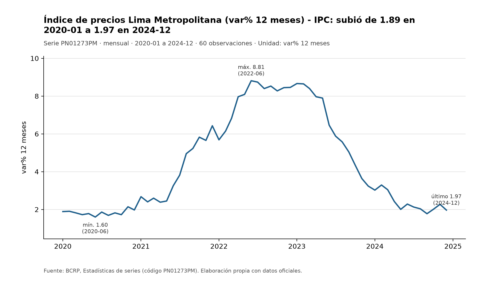
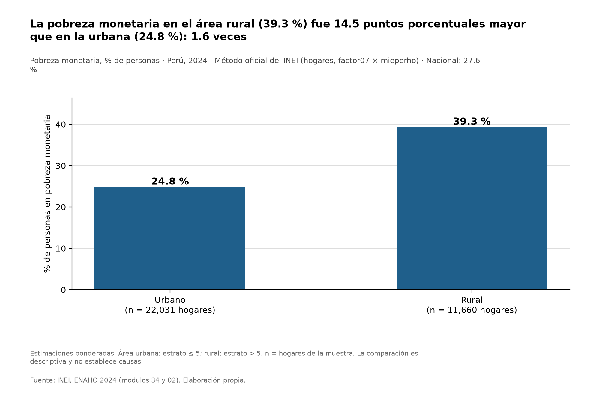
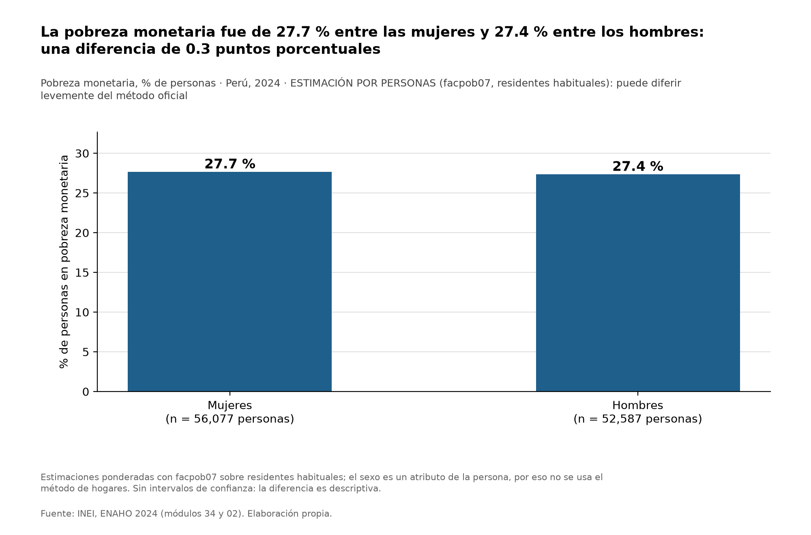
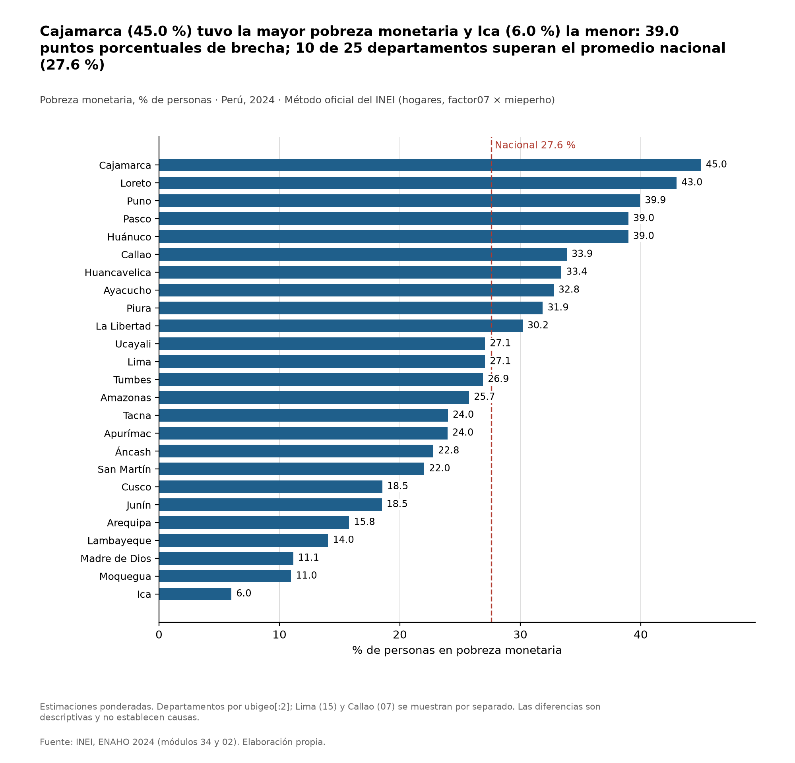
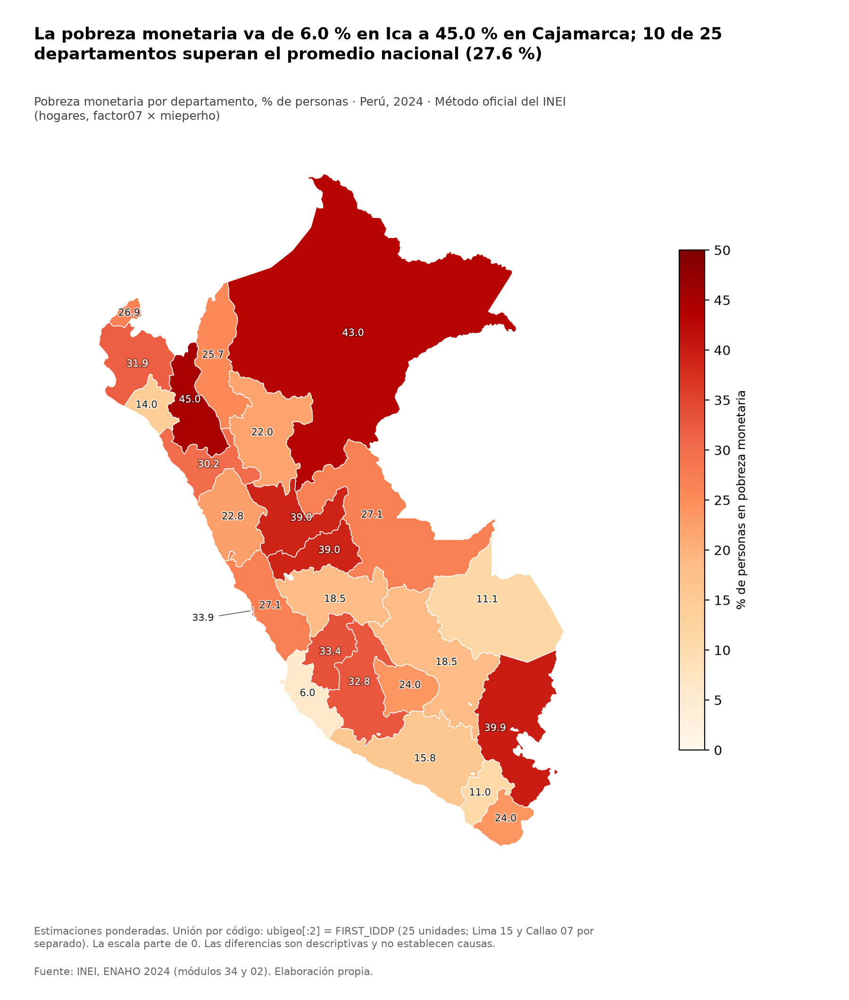

Agente de investigación socioeconómica: resultados
Pobreza monetaria 2024 (INEI, ENAHO 2024) e inflación de Lima (BCRP). Análisis descriptivo, con factores de expansión; no estima relaciones causales.
Pobreza monetaria, 2024
Nacional
27.6%
Pobreza monetaria, 2024 · método oficial de hogares (factor07 × mieperho)
Muestra: 33,691 personas
Muestra: 33,691 personas
Urbano
24.8%
Pobreza monetaria, 2024 · método oficial de hogares (factor07 × mieperho)
Muestra: 22,031 personas
Muestra: 22,031 personas
Rural
39.3%
Pobreza monetaria, 2024 · método oficial de hogares (factor07 × mieperho)
Muestra: 11,660 personas
Muestra: 11,660 personas
Mujeres
27.7%
Pobreza monetaria, 2024 · método por personas (facpob07)
Muestra: 56,077 personas
Muestra: 56,077 personas
Hombres
27.4%
Pobreza monetaria, 2024 · método por personas (facpob07)
Muestra: 52,587 personas
Muestra: 52,587 personas
Cifras de salidas/indicadores.csv. Nacional, urbano y rural: método oficial de hogares. Por sexo: método por personas (puede diferir levemente del oficial).
Los 25 departamentos (haz clic en una columna para ordenar)
| Departamento | Código | Oficial hogares (%) | Personas (%) | Ref. sesión 16 (%) | Dif. (pp) | Muestra (personas) |
|---|---|---|---|---|---|---|
| Cajamarca | 06 | 45.0 | 45.0 | 45.0 | +0.01 | 1,469 |
| Loreto | 16 | 43.0 | 42.6 | 43.0 | -0.03 | 1,359 |
| Puno | 21 | 39.9 | 40.4 | 39.9 | +0.04 | 1,123 |
| Pasco | 19 | 39.0 | 39.3 | 39.0 | -0.03 | 865 |
| Huánuco | 10 | 39.0 | 39.5 | 39.0 | -0.04 | 1,244 |
| Callao | 07 | 33.9 | 33.8 | 33.9 | -0.04 | 1,027 |
| Huancavelica | 09 | 33.4 | 33.6 | 33.4 | +0.00 | 1,042 |
| Ayacucho | 05 | 32.8 | 33.0 | 32.8 | -0.04 | 1,160 |
| Piura | 20 | 31.9 | 31.8 | 31.9 | -0.04 | 1,611 |
| La Libertad | 13 | 30.2 | 30.1 | 30.2 | -0.01 | 1,509 |
| Ucayali | 25 | 27.1 | 27.1 | 27.1 | -0.03 | 1,119 |
| Lima | 15 | 27.1 | 26.9 | 27.1 | -0.03 | 4,544 |
| Tumbes | 24 | 26.9 | 26.6 | 26.9 | +0.00 | 842 |
| Amazonas | 01 | 25.7 | 26.1 | 25.7 | +0.05 | 1,243 |
| Tacna | 23 | 24.0 | 23.9 | 24.0 | -0.01 | 1,271 |
| Apurímac | 03 | 24.0 | 24.1 | 24.0 | -0.04 | 913 |
| Áncash | 02 | 22.8 | 22.9 | 22.8 | -0.03 | 1,393 |
| San Martín | 22 | 22.0 | 22.0 | 22.0 | +0.02 | 1,347 |
| Cusco | 08 | 18.5 | 18.5 | 18.5 | +0.04 | 1,230 |
| Junín | 12 | 18.5 | 18.6 | 18.5 | -0.00 | 1,506 |
| Arequipa | 04 | 15.8 | 15.8 | 15.8 | -0.02 | 1,506 |
| Lambayeque | 14 | 14.0 | 14.1 | 14.0 | +0.04 | 1,302 |
| Madre de Dios | 17 | 11.1 | 11.1 | 11.1 | +0.05 | 603 |
| Moquegua | 18 | 11.0 | 10.9 | 11.0 | -0.03 | 963 |
| Ica | 11 | 6.0 | 5.9 | 6.0 | +0.01 | 1,500 |
Fuente: INEI, ENAHO 2024. «Oficial hogares» = factor07 × mieperho (la cifra que se reporta); «Personas» = facpob07 (informativa). La referencia de la sesión 16 está redondeada a 0.1; la diferencia es calculado menos referencia. Lima (15) y Callao (07) van separados.
Figuras y mapa

Fuente: BCRP, serie PN01273PM (variación % a 12 meses del IPC de Lima Metropolitana), obtenida con la herramienta graficar_serie del MCP.

Fuente: INEI, ENAHO 2024 (módulos 34 y 02). Método oficial de hogares (factor07 × mieperho).

Fuente: INEI, ENAHO 2024. Método por personas (facpob07): puede diferir levemente del oficial de hogares.

Fuente: INEI, ENAHO 2024. Método oficial de hogares (factor07 × mieperho).

Fuente: INEI, ENAHO 2024; límites departamentales del GeoJSON del curso. Método oficial de hogares (factor07 × mieperho).